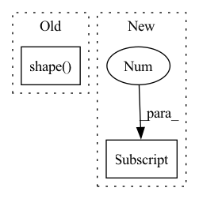

Pattern ID :3498
Before Change
if self.ap is None:
self.ap = AudioPreprocessor(input_sr=sr, output_sr=16000, melspec_buckets=80, hop_length=256, n_fft=1024)
text = self.tf.string_to_tensor(transcript).long()
text_len = torch.LongTensor(text.shape( 0) )
speech = torch.transpose(self.ap.audio_to_mel_spec_tensor(wave), 0, 1)
speech_len = torch.LongTensor(speech.shape(1))
if self.spemb:After Change
if self.ap is None:
self.ap = AudioPreprocessor(input_sr=sr, output_sr=16000, melspec_buckets=80, hop_length=256, n_fft=1024)
text = self.tf.string_to_tensor(transcript).long()
text_len = torch.LongTensor(text.shape[0] )
speech = torch.transpose(self.ap.audio_to_mel_spec_tensor(wave), 0, 1)
speech_len = torch.LongTensor(speech.shape[1])
if self.spemb:In pattern: SUPERPATTERN
Frequency: 7
Non-data size: 2
Instances Fragment ID: 13393005
Project Name: digitalphonetics/ims-toucan
Commit Name: d9bc0a5423b5454d68e127cd7a51927f952324aa
Time: 2021-02-22
Author: florian.lux@ims.uni-stuttgart.de
File Name: TransformerTTS/TransformerTTSDataset.py
M Class Name: TransformerTTSDataset
N Class Name: TransformerTTSDataset
M Method Name: __getitem__(2)
N Method Name: __getitem__(2)
M Parent Class: Dataset
N Parent Class: Dataset
M File Name: TransformerTTS/TransformerTTSDataset.py
N File Name: TransformerTTS/TransformerTTSDataset.py
M Start Line: 37
M End Line: 40
N Start Line: 37
N End Line: 45
Before Change
on_device,
):
dtype, x, axis = dtype_values_axis
if len(np.shape( x) ) == 1:
axis = None
helpers.test_frontend_function(
input_dtypes=dtype,After Change
):
dtype, x, axis, ord, check_stable = norm_values
if check_stable:
assume(matrix_is_stable(x[0] , cond_limit=10))
helpers.test_frontend_function(
input_dtypes=dtype,
frontend=frontend, Fragment ID: 13393006
Project Name: ivy-dl/ivy
Commit Name: d946a935562c4291dcd74df785c1a32bb4b940c5
Time: 2023-03-17
Author: hirwanshutiflx@gmail.com
File Name: ivy_tests/test_ivy/test_frontends/test_numpy/test_linear_algebra/test_norms_and_other_numbers.py
M Class Name: AnonimousClass
N Class Name: AnonimousClass
M Method Name: test_numpy_norm(6)
N Method Name: test_numpy_norm(7)
M Parent Class:
N Parent Class:
M File Name: ivy_tests/test_ivy/test_frontends/test_numpy/test_linear_algebra/test_norms_and_other_numbers.py
N File Name: ivy_tests/test_ivy/test_frontends/test_numpy/test_linear_algebra/test_norms_and_other_numbers.py
M Start Line: 34
M End Line: 42
N Start Line: 81
N End Line: 83
Before Change
Returns:
torch.Tensor: The calculated loss
if len(pred.shape) > 1 and pred.shape( 1) == 1:
// For binary class segmentation, the shape of pred is
// [N, 1, H, W] and that of label is [N, H, W].
// As the ignore_index often set as 255, so theAfter Change
Returns:
torch.Tensor: The calculated loss
if len(pred.shape) > 1 and pred.shape[1] == 1:
// For binary class segmentation, the shape of pred is
// [N, 1, H, W] and that of label is [N, H, W].
// As the ignore_index often set as 255, so the Fragment ID: 13393000
Project Name: alibaba/easycv
Commit Name: 0cb91de0cb80845f2a09f6de7c3697f28b51629e
Time: 2022-09-14
Author: 55594658+zzoneee@users.noreply.github.com
File Name: easycv/models/loss/cross_entropy_loss.py
M Class Name: AnonimousClass
N Class Name: AnonimousClass
M Method Name: binary_cross_entropy(9)
N Method Name: binary_cross_entropy(8)
M Parent Class:
N Parent Class:
M File Name: easycv/models/loss/cross_entropy_loss.py
N File Name: easycv/models/loss/cross_entropy_loss.py
M Start Line: 139
M End Line: 139
N Start Line: 118
N End Line: 172
Before Change
def rand_translation(x, ratio=(1, 8)):
B, H, W = tf.shape(x)[0], tf.shape( x) [1], tf.shape(x)[2]
translation_x = tf.random.uniform([B, 1], -(W * ratio[0] // ratio[1]), (W * ratio[0] // ratio[1]) + 1, dtype=tf.int32)
translation_y = tf.random.uniform([B, 1], -(H * ratio[0] // ratio[1]), (H * ratio[0] // ratio[1]) + 1, dtype=tf.int32)
grid_x = tf.clip_by_value(tf.expand_dims(tf.range(W, dtype=tf.int32), 0) + translation_x + 1, 0, W + 1)After Change
translation_x = tf.random.uniform([batch_size, 1], -shift[0], shift[0] + 1, dtype=tf.int32)
translation_y = tf.random.uniform([batch_size, 1], -shift[1], shift[1] + 1, dtype=tf.int32)
grid_x = tf.clip_by_value(tf.expand_dims(tf.range(image_size[0], dtype=tf.int32), 0) + translation_x + 1, 0, image_size[0] + 1)
grid_y = tf.clip_by_value(tf.expand_dims(tf.range(image_size[1], dtype=tf.int32), 0) + translation_y + 1, 0, image_size[1] + 1)
x = tf.gather_nd(tf.pad(x, [[0, 0], [1, 1], [0, 0], [0, 0]]), tf.expand_dims(grid_x, -1), batch_dims=1)
x = tf.transpose(tf.gather_nd(tf.pad(tf.transpose(x, [0, 2, 1, 3]), [[0, 0], [1, 1], [0, 0], [0, 0]]), tf.expand_dims(grid_y, -1), batch_dims=1), [0, 2, 1, 3])
return x Fragment ID: 13392996
Project Name: mit-han-lab/data-efficient-gans
Commit Name: 96d6d871bf47d8dd3d280b77a5c3a01c674a7acd
Time: 2020-07-01
Author: zsyzzsoft@gmail.com
File Name: DiffAugment-stylegan2/DiffAugment_tf.py
M Class Name: AnonimousClass
N Class Name: AnonimousClass
M Method Name: rand_translation(2)
N Method Name: rand_translation(2)
M Parent Class:
N Parent Class:
M File Name: DiffAugment-stylegan2/DiffAugment_tf.py
N File Name: DiffAugment-stylegan2/DiffAugment_tf.py
M Start Line: 41
M End Line: 47
N Start Line: 41
N End Line: 49
Before Change
// TODO, use registered buffer
causal_mask = paddle.tensor.triu(
paddle.ones((paddle.shape(input_ids)[-1], paddle.shape( input_ids) [-1])) * -1e4, diagonal=1
)
if past_key_values_length > 0:
causal_mask = paddle.concat(After Change
if position_ids is None:
position_ids = paddle.arange(
past_key_values_length, input_shape[-1] + past_key_values_length, dtype="int64"
)
position_ids = position_ids.unsqueeze(0)
position_ids = paddle.expand(position_ids, input_shape) Fragment ID: 13392998
Project Name: paddlepaddle/paddlenlp
Commit Name: 64f4c107a9b225af009e63f95372e4371ce59337
Time: 2023-03-15
Author: 35913314+1649759610@users.noreply.github.com
File Name: paddlenlp/transformers/opt/modeling.py
M Class Name: OPTModel
N Class Name: OPTModel
M Method Name: forward(10)
N Method Name: forward(9)
M Parent Class: OPTPretrainedModel
N Parent Class: OPTPretrainedModel
M File Name: paddlenlp/transformers/opt/modeling.py
N File Name: paddlenlp/transformers/opt/modeling.py
M Start Line: 366
M End Line: 379
N Start Line: 294
N End Line: 399
Before Change
def rand_translation(x, ratio=(1, 8)):
B, H, W = tf.shape(x)[0], tf.shape( x) [1], tf.shape(x)[2]
translation_x = tf.random.uniform([B, 1], -(W * ratio[0] // ratio[1]), (W * ratio[0] // ratio[1]) + 1, dtype=tf.int32)
translation_y = tf.random.uniform([B, 1], -(H * ratio[0] // ratio[1]), (H * ratio[0] // ratio[1]) + 1, dtype=tf.int32)
grid_x = tf.clip_by_value(tf.expand_dims(tf.range(W, dtype=tf.int32), 0) + translation_x + 1, 0, W + 1)After Change
shift = tf.cast(tf.cast(image_size, tf.float32) * ratio + 0.5, tf.int32)
translation_x = tf.random.uniform([batch_size, 1], -shift[0], shift[0] + 1, dtype=tf.int32)
translation_y = tf.random.uniform([batch_size, 1], -shift[1], shift[1] + 1, dtype=tf.int32)
grid_x = tf.clip_by_value(tf.expand_dims(tf.range(image_size[0], dtype=tf.int32), 0) + translation_x + 1, 0, image_size[0] + 1)
grid_y = tf.clip_by_value(tf.expand_dims(tf.range(image_size[1], dtype=tf.int32), 0) + translation_y + 1, 0, image_size[1] + 1)
x = tf.gather_nd(tf.pad(x, [[0, 0], [1, 1], [0, 0], [0, 0]]), tf.expand_dims(grid_x, -1), batch_dims=1)
x = tf.transpose(tf.gather_nd(tf.pad(tf.transpose(x, [0, 2, 1, 3]), [[0, 0], [1, 1], [0, 0], [0, 0]]), tf.expand_dims(grid_y, -1), batch_dims=1), [0, 2, 1, 3]) Fragment ID: 13392992
Project Name: mit-han-lab/data-efficient-gans
Commit Name: 96d6d871bf47d8dd3d280b77a5c3a01c674a7acd
Time: 2020-07-01
Author: zsyzzsoft@gmail.com
File Name: DiffAugment_tf.py
M Class Name: AnonimousClass
N Class Name: AnonimousClass
M Method Name: rand_translation(2)
N Method Name: rand_translation(2)
M Parent Class:
N Parent Class:
M File Name: DiffAugment_tf.py
N File Name: DiffAugment_tf.py
M Start Line: 41
M End Line: 47
N Start Line: 41
N End Line: 49